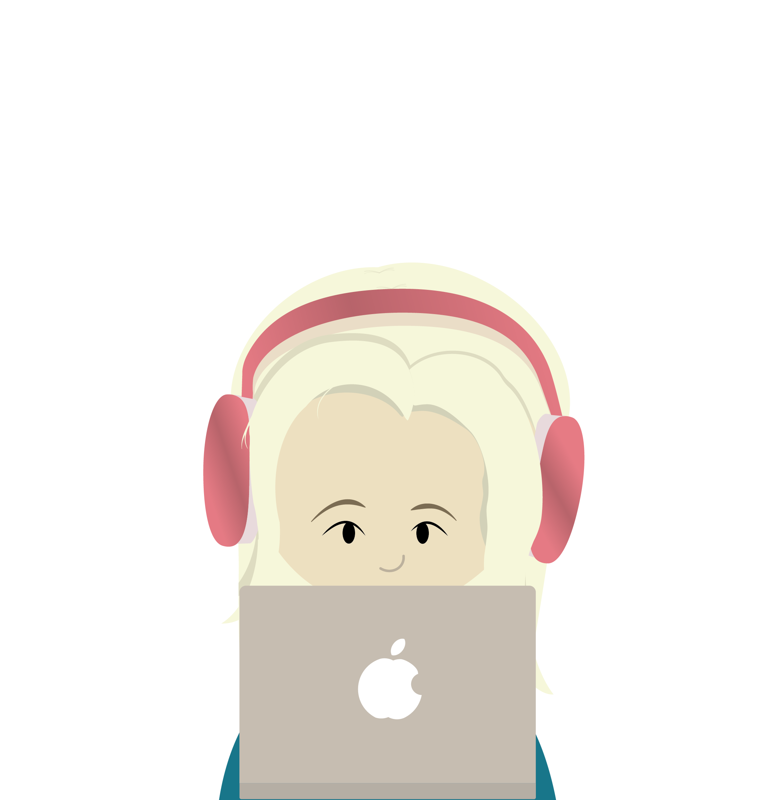

Eigen ontwikkeling
in fotografie, grafisch en mixmedia
in fotografie, grafisch en mixmedia

Mijn werk als content creator bij Borboleta Music
Stage in 2026: mijn mixmedia, grafisch en fotografie werk
Ik ben iemand die vragen en verzoeken met beide handen aanpakt. Of het nu gaat om nieuwe of onbekende onderwerpen: ik verdiep me erin totdat ik het volledig begrijp én zelfstandig kan uitvoeren. Of het nu multimedia, grafisch werk of een andere uitdaging is, ik haal graag het beste uit alles.
